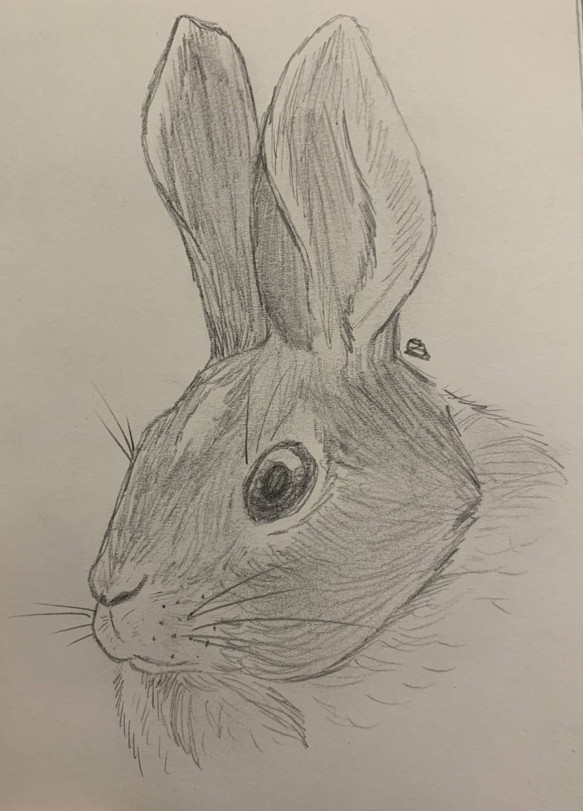
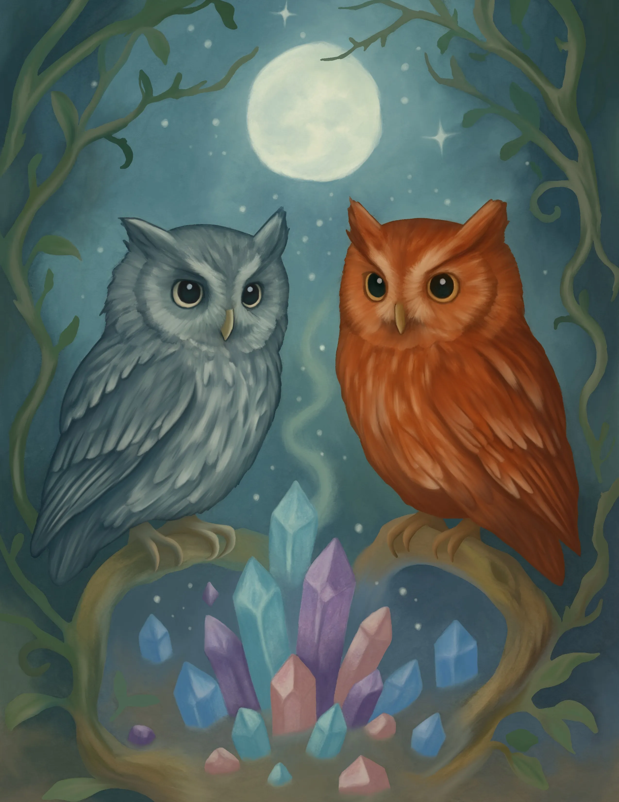

Featured Artwork
This page demonstrates image optimization and accessibility using artwork images.

Digital Illustration

This page demonstrates image optimization and accessibility using artwork images.

